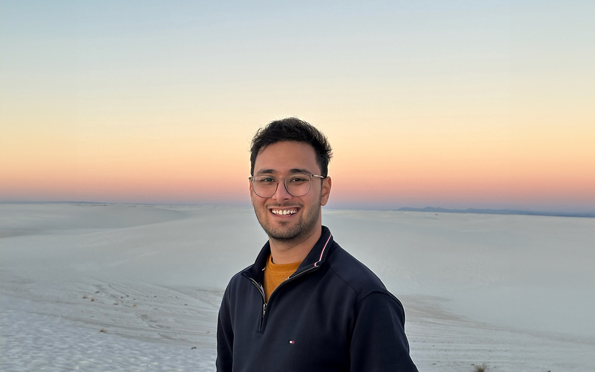

Hey there, I'm Akshat
I'm a data scientist driven by curiosity — about people, patterns, and the stories hiding in data. Right now I'm at Avant, using machine learning to make direct mail feel less like junk mail and more like a well-timed conversation.

I work at the intersection of data science and product strategy — using machine learning to optimize how we reach people through direct mail. That means figuring out the right message, the right audience, and the right moment. It's part science, part puzzle, and I genuinely love it.
Over two years I split my time between research and teaching — and both shaped how I think about data. Working alongside Prof. Ceren Budak and Prof. Dallas Card, I dug into projects at the edge of data science and social questions: NLP classifiers for local election news, Bayesian models of how academic publishing has shifted, and a study of how 5,000+ news platforms sustain themselves financially.
In between, I was a Teaching Assistant — helping students get unstuck, think through hard problems, and actually understand what they were building. Turns out explaining things well is its own kind of skill.
A five-month stint that packed in a lot. I worked on risk and compliance monitoring — analyzing how users moved through the product to help teams understand credit exposure and make sharper decisions. I built dashboards and tracked loan application flows, using process mining to surface friction points nobody had names for yet.
I also ran customer segmentation, credit evaluation, and A/B tests — the kind of work where getting the experiment design right matters just as much as reading the results. Along the way, I cleaned up a lot of data that had been quietly causing problems for a while.
This is where I learned what it actually means to own a problem end-to-end. I worked across the full modeling lifecycle — data prep, feature engineering, validation, deployment — on projects spanning marketing operations, fraud monitoring, and forecasting. Nothing was handed to me pre-cleaned.
I built pipelines in Python and SQL that other people could rely on, developed predictive and text-based models on messy real-world data, and created reporting views that let teams track model behavior over time. The biggest lesson: a model nobody can explain to a stakeholder isn't actually useful.
A Bayesian look at a century of U.S. baby names to uncover age-indicative naming trends. Less predictive model, more cultural archaeology — what were parents thinking, and what does that tell us about the era they lived in?
View on GitHub →Sepsis moves fast. Using 21,000+ ICU patient records and an ensemble of XGBoost, AdaBoost, and gradient boosting models, this project flags risk early — hitting an AUC of 0.89 while navigating severe class imbalance.
View on GitHub →Dug into flight data for a major U.S. airline to map cancellation patterns and their causes — weather, labor disputes, the Boeing 737 MAX grounding. The goal: sharper recommendations for schedule reliability and fleet decisions.
View on GitHub →Built a real-time system to identify local election articles at scale. Combined a fine-tuned BERT model with XGBoost and paragraph-level aggregation — then handed it off into an actual newsroom workflow.
Analyzed subscription and donation patterns across 5,000+ news platforms to understand what drives people to pay for journalism — and what keeps them from it. A deep dive into the economics of digital media.
Applied Bayesian analysis to 1,000+ graduate publications to trace how academic productivity in computer science has shifted. The findings raised more questions than they answered — in the best way.
There's more where that came from — browse the rest on GitHub.
I write about data, fintech, startups, and the questions worth asking. On data science in the wild, how ML actually works inside product teams, and the occasional rabbit hole that turns out to be more interesting than anything on my reading list.
Read more at Well-Calibrated on Medium →
Things that keep me curious
Whether it's a research collaboration, a data science challenge worth solving, or just a good conversation about where machine learning is headed — reach out. I'm always up for it.